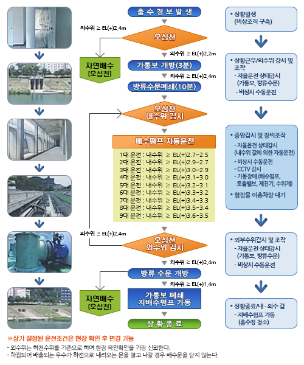

<dialog class="p_dtl_pump" style="--width:1000px">
  <form method="dialog">
    <header class="p_header tit">
      <h1>펌프장 상세</h1>
      <div class="tool">
        <button type="button" class="btn_close" onclick="document.querySelector('.p_dtl_pump').close();">닫기</button>
      </div>
    </header>
    <section class="p_body">
      <div class="flex_wrap">
        <section>
          <header class="dot_tit">
            <h1>현행 펌프장 운영 규칙</h1>
          </header>
          <div>
            <figure>
              
            </figure>
          </div>
        </section>
        <section class="analytics">
          <header class="dot_tit">
            <h1>신규 운영 규칙에 따른 비교 분석 정보</h1>
          </header>
          <ul class="rule_lst">
            <li>
              <div class="desc">
                <strong>Rule 1</strong>
                <p>n분 후 예측된 유수지 수위에 의한 펌프 순차 운영</p>
              </div>
              <figure>
                
                <figcaption>RULE1</figcaption>
              </figure>
            </li>
            <li>
              <div class="desc">
                <strong>Rule 2</strong>
                <p><em>평상시 :</em> Rule 1과 동일,</p>
                <p><em>우수관거 과부하시 :</em> n분 후 까지 유입될 우수 전량 배제</p>
              </div>
              <figure>
                
                <figcaption>RULE2</figcaption>
              </figure>
            </li>
            <li>
              <div class="desc">
                <strong>Rule 3</strong>
                <p>n분 후 초기 가동 수위 이상의 유입량 전량 배제</p>
              </div>
              <figure>
                
                <figcaption>RULE3</figcaption>
              </figure>
            </li>
          </ul>
        </section>
      </div>      
    </section>
    <section class="p_foot">
      <button type="button" class="btn_gray" onclick="document.querySelector('.p_dtl_pump').close();">닫기</button>
    </section>
  </form>
</dialog>


